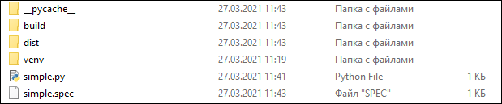
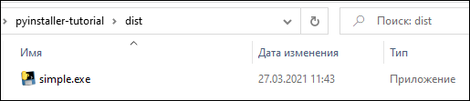
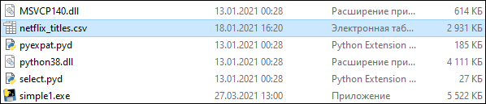
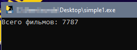

| Тема 1. Как создать exe файл для Python кода с помощью PyInstaller. | ||
| Назад | ||
Установка PyInstallerУстановка PyInstaller не отличается от установки любой другой библиотеки Python. Вот так можно проверить версию PyInstaller. Создание exe файла с помощью PyInstaller PyInstaller собирает в один пакет Python-приложение и все необходимые ему библиотеки следующим образом:
Если использовать параметр команды Компилируем модель с помощью PyInstaller: Возьмем в качестве примера простейший скрипт на Python c названием simple.py, который содержит такой код. Создадим один исполняемый файл. В командной строке введите: После завершения установки будет две папки, BUILD и DIST, а также новый файл с расширением .spec. Spec-файл будет называться так же, как и файл скрипта.  Python создает каталог распространения, который содержит основной исполняемый файл, а также все динамические библиотеки.  Вот что произойдет после запуска файла. Есть CSV-файл netflix_titles.csv, и Python-script, который считывает количество записей в нем. Теперь нужно добавить этот файл в бандл с исполняемым файлом. Файл Python-скрипта назовем просто simple1.py. Создадим исполняемый файл с данными в папке.
Параметр Синтаксис add-data:
Можно увидеть, что файл теперь добавляется в папку DIST вместе с исполняемым файлом.  Также, открыв spec-файл, можно увидеть раздел datas, в котором указывается, что файл netflix_titles.csv копируется в текущую директорию.
Запустим файл simple1.exe, появится консоль с выводом: Добавление файлов с данными и параметр onefile
Если задать параметр Скрипт обновлен для чтения папки TEMP и файлов с данными. Создадим exe-файл с помощью onefile и add-data. После успешного создания файл simple1.exe появится в папке DIST. Можно скопировать исполняемый файл на рабочий стол и запустить, чтобы убедиться, что нет никакой ошибки, связанной с отсутствием файла.  Дополнительные импорты с помощью Hidden Imports
Исполняемому файлу требуются все импорты, которые нужны
Python-скрипту. Иногда PyInstaller может пропустить динамические
импорты или импорты второго уровня, возвращая ошибку Для решения этой ошибки нужно передать название недостающей библиотеки в hidden-import. Например, чтобы добавить библиотеку os, нужно написать вот так: Файл specФайл spec — это первый файл, который PyInstaller создает, чтобы закодировать содержимое скрипта Python вместе с параметрами, переданными при запуске. PyInstaller считывает содержимое файла для создания исполняемого файла, определяя все, что может понадобиться для него. Файл с расширением .spec сохраняется по умолчанию в текущей директории. Если у вас есть какое-либо из нижеперечисленных требований, то вы можете изменить файл спецификации:
Например, есть скрипт simpleModel.py, который использует TensorFlow и выводит номер версии этой библиотеки. Компилируем модель с помощью PyInstaller: После успешной компиляции запускаем исполняемый файл, который возвращает следующую ошибку. Исправим ее, обновив файл spec. Одно из решений — создать файл spec. Команда pyi-makespec создает spec-файл по умолчанию, содержащий все параметры, которые можно указать в командной строке. Файл simpleModel.spec создается в текущей директории.
Поскольку был использован параметр Если использовать параметр по умолчанию или onedir, то вместе с exe-разделом будет также и раздел collect. Можно открыть simpleModel.spec и добавить следующий текст для создания хуков. Создаем хуки и добавляем их в hidden imports и раздел данных. Хуки
Обычно пакеты Python используют нормальные методы для импорта
своих зависимостей, но в отдельных случаях, как например
TensorFlow, существует необходимость импорта динамических
библиотек. PyInstaller не может найти все библиотеки, или же их
может быть слишком много. В таком случае рекомендуется
использовать вспомогательный инструмент для импорта из Скомпилируем модель после обновления файла simpleModel.spec. Скопируем исполняемый файл на рабочий стол и увидим, что теперь он корректно отображает версию TensorFlow. Вывод:PyInstaller предлагает несколько вариантов создания простых и сложных исполняемых файлов из Python-скриптов:
|
||
| Конспект подготовлен Бакулиным А. М. 2024 год. | ||